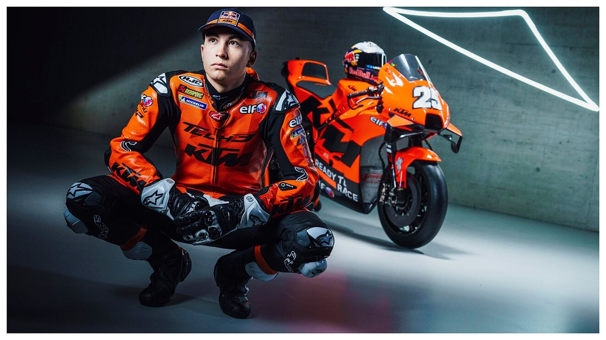
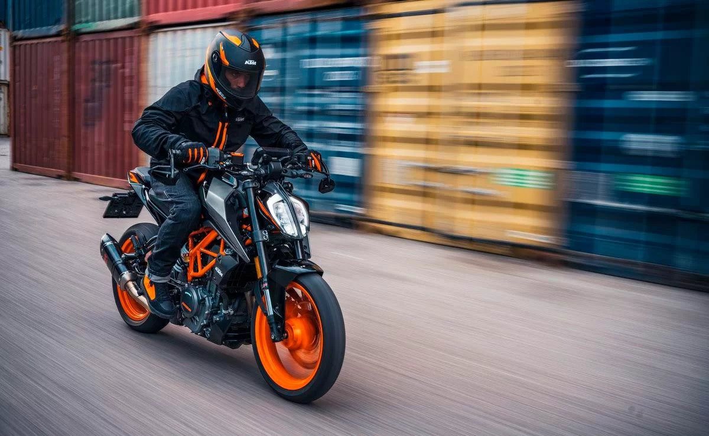
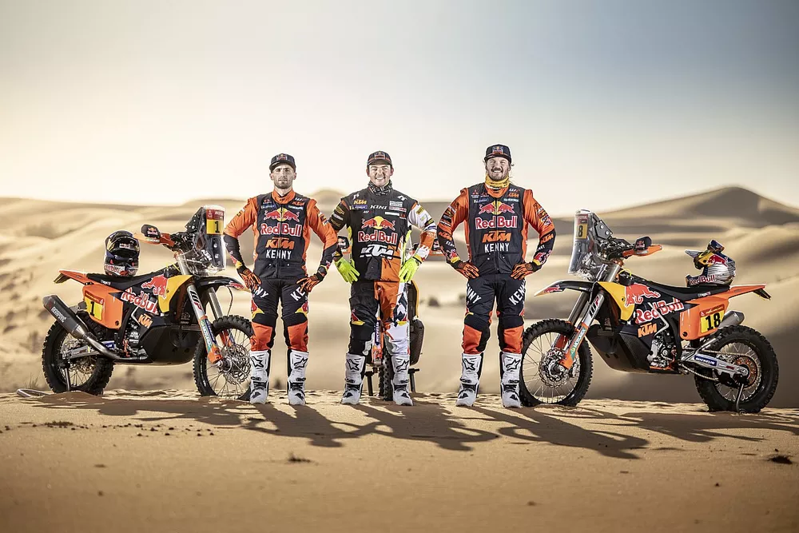

"Ha sido el mejor viernes de todo el año" "No tengo por qué tener nervios, la verdad es que ha sido un día muy bueno. Cerramos el viernes con el mejor crono del día y además, por la tarde nuestro ritmo ha sido muy alto con neumáticos muy gastados", manifestó el líder del Mundial, que logró un tiempo combinado de 1 minuto, 40 segundos y 403 milésimas.
KTM LANZARÁ CINCO MODELOS 490: MOTOS PARA TODOS LOS GUSTOS
La gama 490 de KTM se anticipó desde 2019, y parece que ya este año veremos el lanzamiento de esta nueva familia que traerá modelos para todos los gustos. Según algunos medios especializados europeos, las KTM 490 incluirán una Duke, una RC y una Adventure, además de incursionar en los segmentos Supermoto y Enduro.

LA NUEVA KTM 450 SMR VA A ADUEÑARSE DE LAS PISTAS
KTM mostró en su totalidad a la nueva SMR 2023, la supermotard de la firma naranja que pinta muy bien para el próximo año. Con algunas mejoras específicas y un sutil lavado de cara, KTM lanzó su 450 SMR 2023, una de sus motos más atractivas ya sea por diversión como por deportividad. Se trata de una supermotard que tuvo ciertas revisiones para ser aun más ágil, rápida y efectiva que nunca.
Recall para las motos KTM en Argentina
Por medios de comunicaciones enviadas a los propietarios, el Grupo Simpa difundió una alerta de recall para la KTM Duke 690. Es por una falla en la tapa del tanque de combustible, que produce "riesgos de accidentes con daños físicos o fatales" para los pasajeros de estas motos.

El tridente campeón de KTM para reconquistar el Dakar Matthias Walkner, Toby Price y Kevin Benavides formarán la alineación de lujo de KTM para afrontar el Dakar 2022 e intentarán recuperar la victoria tras dos derrotas consecutivas.
